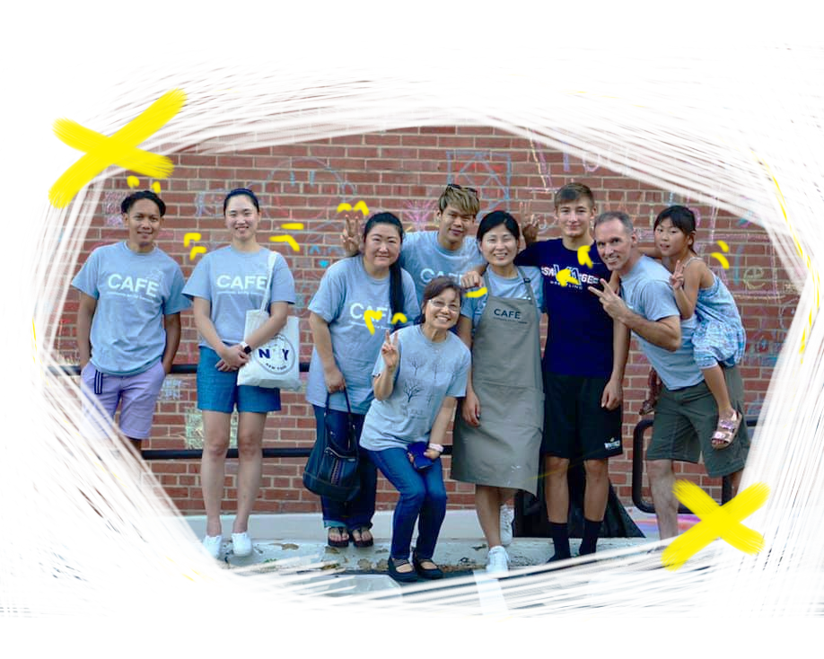
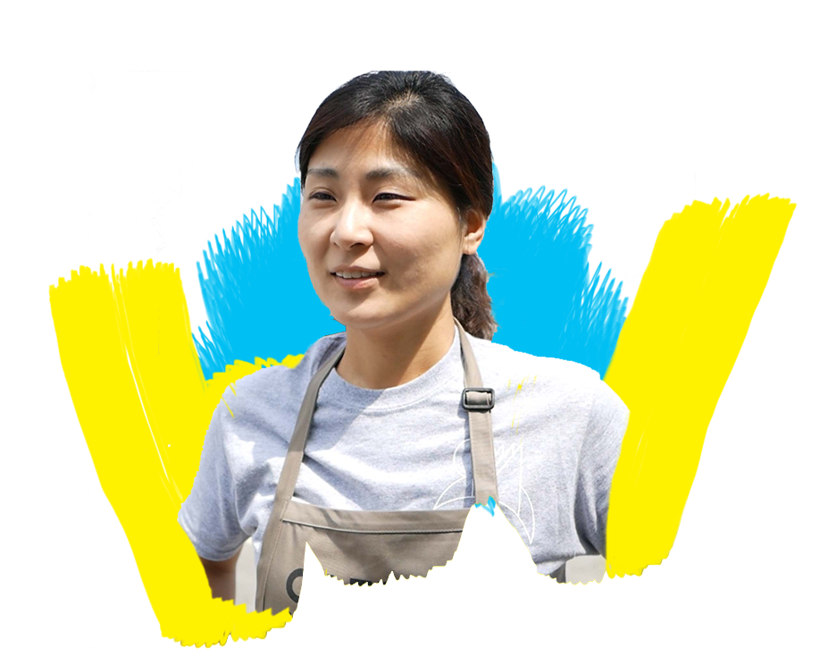
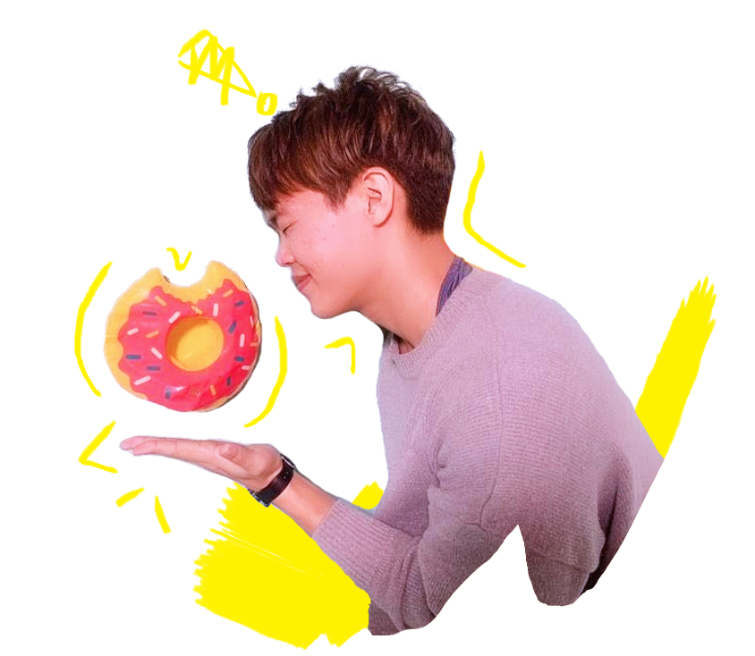
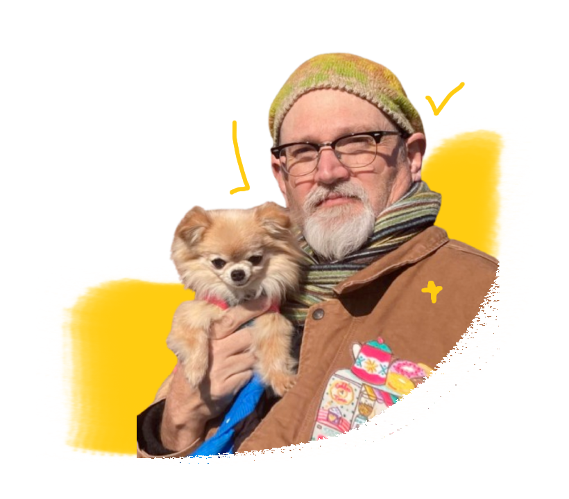
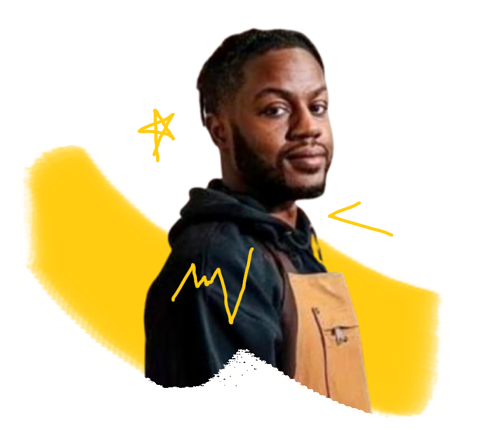

About Us
Community Art For Everyone (or “CAFE” for short) is all about empowering our local neighborhoods to express themselves in new and creative ways. We work closely with local government, non-profit organizations, and neighborhoods around DC and Detroit.
Why We Serve
We handle the complicated stuff, like gathering the paint buckets and paperwork, so our communities can jump right onto the canvas.
To us, there’s nothing more rewarding than working together with friends to enable our neighbors to express themselves in new and fun ways.
Become a Volunteer
Our Team

Hannah Joo
Artist, President
Hannah is an urban artist and president of Community Art For Everyone, a 501(c)3 nonprofit organization based in the Washington DC metro area.
She was born in Seoul, South Korea. Both of her parents were urban planners, and she has been interested in cities since she was childhood. She has a BA in Fine Arts, Sculpture from Kookmin University. While studying Museum Studies in her master’s course, she wrote a graduation thesis on urban revitalization through culture and arts. She is a PhD candidate in Urban Planning at Hanyang University in Seoul, South Korea.
After graduating from university, she organized exhibitions, public art projects, and events as Curator of the Gail Art Museum and as an independent curator for ten years.
As an educator, Hannah has also developed learning programs in the field of art exhibitions and community art. She has lectured professionally to public school teachers, school employees, and government officers. Also, she was an instructor at Young-dong University.
After moving to the U.S.A. in 2015, Hannah worked as the director of the Korean Heritage Foundation based in Washington DC for over three years. She organized a diverse portfolio of projects related to Korean culture from traditional performances to ‘cultural appreciation camps’ for Korean-American students, and more.
In 2019, Hannah founded Community Art For Everyone. The organization has been contributing various art activities for culturally and economically marginalized communities such as murals, community sculptures, public arts, and community events.
Hannah believes that the combination of the city, humanity, and the arts can bring a lasting impact to communities. Her vision is to use art as a medium to transform our communities and cities to be more healthy, safe, and beautiful for everyone.

Josh Kim
Web Manager, DMV Team
Josh is a professional UX designer in the DC Metro area. He believes that experiences should be designed with communities so that they can be accessible to everyone.
Josh helps CAFE with event planning, marketing, and website maintenance. Outside of his time volunteering, he enjoys studying about design justice, accessibility, and trauma-informed design.
Zeehee Scott
Community Event Coordinator, DMV Team
Teresa is a potter and a painter who loves to help people interact with art and enjoy art through volunteering for CAFE with her great passion for art. She believes CAFE can help the community grow art friendly, peace oriented and open minded environment to anyone through experiencing its events and participating activities with other people. She has been teaching English for 33 years and now she teaches English to immigrants as a volunteer.

John Wood
Artist, Detroit Team
John is attracted to the type of art that makes you stop and wonder and reflect about it; the kind of art that raises questions rather than provides answers. He believes art has the ability to cross barriers of time, place, and language. His hope is that his artwork can create a bridge connecting people and ideas.
John studied art education at Wayne State University (BA 1990) and sculpture at Cranbrook Academy of Art (MFA 92). He retired as an art educator for the Detroit Public Schools in 2014. He was diagnosed with dementia in 2014. He has participated and organized art exhibits for people with dementia and their care partners in the United Kingdom and the United States.
John has exhibited his work across the United States, the United Kingdom, and Israel.

Kevante Grimes
Artist, Detroit Team
I’m a community-minded professional with a strong interest in creativity, collaboration, and service, and I’m passionate about supporting initiatives that bring people together, expand access to the arts, and create lasting positive impact within the community.